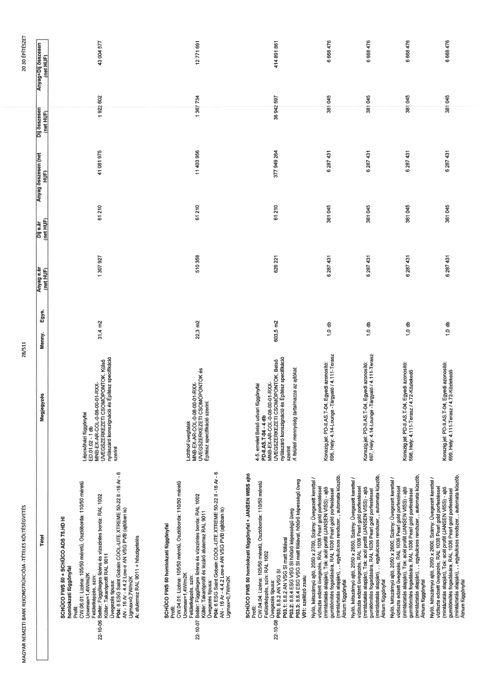

| Tétel | Megjegyzés | Menny. | Egys. | Anyag e.ár (net HUF) | Díj e.ár (net HUF) | Anyag összesen (net HUF) | Díj összesen (net HUF) | Anyag+Díj összesen (net HUF) |
|---|---|---|---|---|---|---|---|---|
| 22-10-06 SCHÜCO FWS 50 + SCHÜCO ADS 75.HD HI homlokzati függönyfal Profil: CW.04.01; Lizéna: 105/50 méretű, Osztóborda: 110/50 méretű Ucwmax=1,4W/m2K Felületképzés, szín: Beltér: Függőleges lizéna és vízszintes borda: RAL 1002 Kültér: Takaróprofil RAL 9011 Üvegezés típusa: P04: átlátszó üveg: 8 ESG Saint Gobain COOL-LITE XTREME 50-22 II - 16 Ar - 8 AN - 16 Ar - 6 6.2 Low-e - 16 Ar - 4 4.2 VSG SI Low-e Ugmax=0,7W/m2K A: alulemez RAL 9011 + hőszigetelés | Lépcsőházi függönyfal ED.01.02 - 1 db MNB-EX-AR-COL-0-08-00-01-RXX-UVEGSZERKEZETI CSOMOPONTOK, Külső nyílászáró konszignáció és Építész specifikáció szerint | 31,4 | m2 | 1 307 927 | 61 210 | 41 081 975 | 1 922 602 | 43 004 577 |
| 22-10-07 SCHÜCO FWS 50 homlokzati függönyfal Profil: CW.04.01; Lizéna: 105/50 méretű, Osztóborda: 110/50 méretű Ucwmax=1,4W/m2K Felületképzés, szín: Beltér: Függőleges lizéna és vízszintes borda: RAL 1002 Kültér: RAL 9011 és lezáró alulemez RAL 9011 Üvegezés típusa: P04: 6 ESG Saint Gobain COOL-LITE XTREME 50-22 II - 16 Ar - 6 AN - 16 Ar - 4 4.2 VSG SI Low-e Ugmax=0,7W/m2K | Lichthof üvegfalak MNB-EX-AR-COL-0-08-00-01-RXX-UVEGSZERKEZETI CSOMOPONTOK és Építész specifikáció szerint | 22,3 | m2 | 510 358 | 61 210 | 11 403 956 | 1 367 734 | 12 771 691 |
| 22-10-08 SCHÜCO FWS 50 homlokzati függönyfal + JANSEN WISS ajtó Profil: CW.04.04; Lizéna: 105/50 méretű, Osztóborda: 110/50 méretű Felületképzés, szín: RAL 1002 Üvegezés típusa: P03: 8 8.2 AN VSG SI P03.1: 8 8.2 AN VSG SI matt fóliával P03.2: 8 8.4 ESG VSG SI hőtűrő képességű üveg V01: szellőző zsalu, V01.1: VSG SI matt fóliával, hőtűrő képességű üveg | 4-5. emelet Belső udvari függönyfal MNB-EX-AR-COL-0-08-00-01-RXX-UVEGSZERKEZETI CSOMOPONTOK, Belső nyílászáró konszignáció és Építész specifikáció szerint. A felületi mennyiség tartalmazza az ajtókat. | 603,5 | m2 | 626 221 | 61 210 | 377 949 264 | 36 942 597 | 414 891 861 |
| Nyíló, kétszárnyú ajtó, 2050 x 2600, Szárny: Üvegezett kerettel / víztiszta edzett üvegezés, RAL 1036 Pearl gold porfestéssel (mintázat alapján), Tok: acél profil (JANSEN VISS), ajtó gumitömítés fogadására, RAL 1036 Pearl gold porfestéssel (mintázat alapján), pánikfunkcióval, egykulcsos rendszer, , automata küszöb, Átrium függönyfal | Konszign. jel: PD-I.AS-T-04, Egyedi azonosító: 696, Hely: 4.14-Lounge - Tárgyaló / 4.1.11-Terasz | 1,0 | db | 6 287 431 | 381 045 | 6 287 431 | 381 045 | 6 668 476 |
| Nyíló, kétszárnyú ajtó, 2050 x 2600, Szárny: Üvegezett kerettel / víztiszta edzett üvegezés, RAL 1036 Pearl gold porfestéssel (mintázat alapján), Tok: acél profil (JANSEN VISS), ajtó gumitömítés fogadására, RAL 1036 Pearl gold porfestéssel (mintázat alapján), pánikfunkcióval, egykulcsos rendszer, , automata küszöb, Átrium függönyfal | Konszign. jel: PD-I.AS-T-04, Egyedi azonosító: 697, Hely: 4.14-Lounge - Tárgyaló / 4.1.11-Terasz | 1,0 | db | 6 287 431 | 381 045 | 6 287 431 | 381 045 | 6 668 476 |
| Nyíló, kétszárnyú ajtó, 2050 x 2600, Szárny: Üvegezett kerettel / víztiszta edzett üvegezés, RAL 1036 Pearl gold porfestéssel (mintázat alapján), Tok: acél profil (JANSEN VISS), ajtó gumitömítés fogadására, RAL 1036 Pearl gold porfestéssel (mintázat alapján), pánikfunkcióval, egykulcsos rendszer, , automata küszöb, Átrium függönyfal | Konszign. jel: PD-I.AS-T-04, Egyedi azonosító: 698, Hely: 4.1.11-Terasz / 4.7.2-Közlekedő | 1,0 | db | 6 287 431 | 381 045 | 6 287 431 | 381 045 | 6 668 476 |
| Nyíló, kétszárnyú ajtó, 2050 x 2600, Szárny: Üvegezett kerettel / víztiszta edzett üvegezés, RAL 1036 Pearl gold porfestéssel (mintázat alapján), Tok: acél profil (JANSEN VISS), ajtó gumitömítés fogadására, RAL 1036 Pearl gold porfestéssel (mintázat alapján), pánikfunkcióval, egykulcsos rendszer, , automata küszöb, Átrium függönyfal | Konszign. jel: PD-I.AS-T-04, Egyedi azonosító: 699, Hely: 4.1.11-Terasz / 4.7.2-Közlekedő | 1,0 | db | 6 287 431 | 381 045 | 6 287 431 | 381 045 | 6 668 476 |
